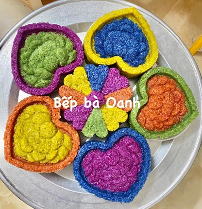
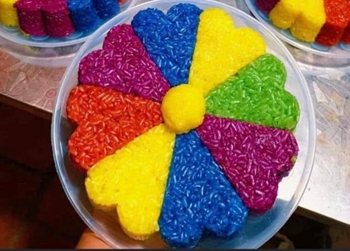
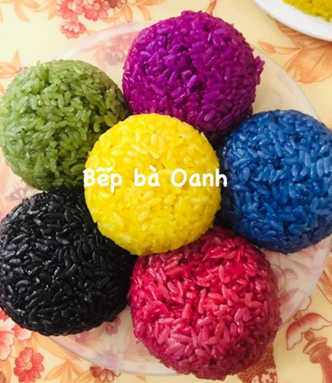
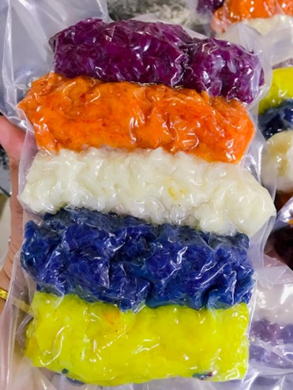
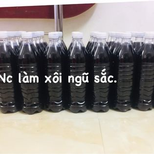

Xôi ngũ sắc
Xôi ngũ sắc là món ăn truyền thống từ lâu đời của người Tày, Nùng ở Cao Bằng. Xôi thường được làm vào các dịp lễ, tết bốn mùa trong năm và trong những dịp hiếu, hỷ. Xôi ngũ sắc có năm màu chủ đạo (đỏ, đen, tím, trắng, vàng), có thể thay bằng màu xanh, màu cam tùy theo sở thích của người chế biến.
Nguyên liệu chính làm xôi là gạo nếp ngon, nếu chọn được gạo nếp Pì Pất, nếp Ong địa phương có hạt tròn, dẻo, thơm là chuẩn nhất. Ngoài màu trắng tự nhiên của gạo nếp thì các màu khác tạo nên sự hấp dẫn của món xôi ngũ sắc là do ngâm gạo với các loại lá, củ được trồng ngay trong vườn nhà. Đa số các màu được tạo thành do ngâm với nước là cẩm, còn màu vàng, cam có thể dùng củ nghệ già, quả gấc. Riêng màu đen phải sử dụng lá cây sâu sâu.
Xôi ngũ sắc không thể thiếu trong ngày Thanh minh, lễ, tết của người Tày, Nùng ở Cao Bằng.
Gạo nếp sau khi vo xong tiến hành ngâm trong nước lá, củ đã đun để nguội khoảng 8 - 10 giờ. Công đoạn đồ xôi được coi là khâu quan trọng hơn cả khi tạo ra món xôi ngũ sắc. Khâu này đòi hỏi người đồ xôi phải thật khéo léo mới có được món xôi như ý. Người làm có thể đồ riêng hoặc cũng có thể trộn hỗn hợp. Vì là những phẩm màu tự nhiên nên khi nấu màu sắc này sẽ khó bị phai lẫn với nhau. Chú ý lượng nước cho vừa phải, khi thấy chõ xôi bốc hết hơi phải bỏ ra để tránh việc xôi bị nát.
Theo quan niệm từ xa xưa của người Tày, Nùng ở Cao Bằng, xôi ngũ sắc do năm màu sắc tạo thành một tổng thể, tượng trưng cho âm dương ngũ hành, cho tình đoàn kết của các dân tộc anh em. Nhưng mỗi màu sắc cũng có thể đứng độc lập, mang ý nghĩa riêng. Màu trắng có vị thơm dẻo nguyên chất của hạt gạo nương, tượng trưng cho sự tinh khiết của đất trời, của hạt sương sớm mai trên núi. Màu đen biểu trưng cho những khó khăn, thiên tai, mất mùa, những vất vả nhọc nhằn của người làm lên bông lúa. Màu xanh mang niềm hy vọng và cầu cho một năm mưa thuận gió hòa, mùa màng bội thu. Màu đỏ tượng trưng cho bếp lửa hồng với mong muốn các thành viên trong gia đình luôn hạnh phúc bên nhau. Màu vàng mang khát vọng no đủ ngàn đời cho con cháu không bao giờ thiếu ăn, thiếu mặc. Màu tím thể hiện cho sự chung thủy, cho tình yêu cây lúa, yêu nghề nông của những người dân.